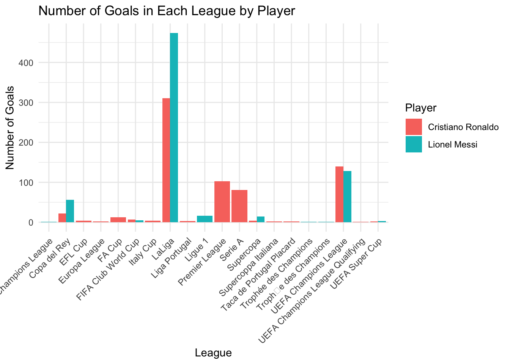
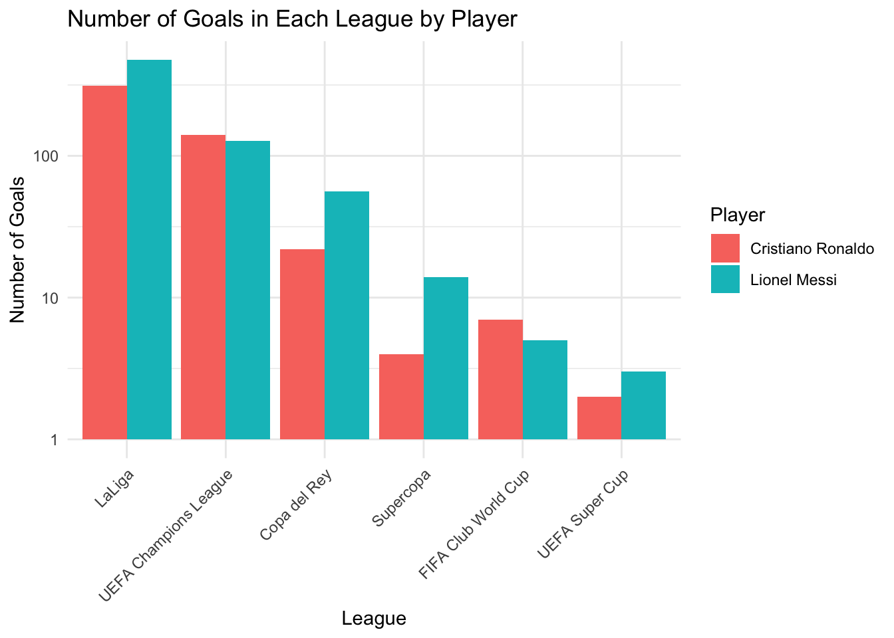

Before we dive into it, let us explain what each variable means. Player - indicates either Messi or Ronaldo Season - indicates the season when the goal was scored, which matters because each season is different, and the players that they were in each season was different as well Competition - indicates the competition which the goal was scored in, some competitions are more significant than others and some leagues are more competitive or harder to perform in than others Matchday - indicates which matchday the goal was scored in. A later matchday or round would indicate a later time in the competition, which could ahve significance as well Date - indicates the date of the goal Venue - indicates whether the goal was scored in a Home(H) or Away(A) game. Generally, away games are harder to perform in becausei it is not your home stadium adnd majority of the fans in the stadium would be cheering for the other team Club - refers to the club that the goal was scored for Opponent - refers to the opponents that the goal was scored against Result - refers to the final score of the match Playing Position - refers to which position on the field the player was playing. Generally, it is easier to score from a central position. Minute - refers to the minute of the match at which the goal was scored at At score - refers to the score when the goal was scored Type - refers to the type of goal scored. Different types of goals can indicate different difficulties of execution Goal assist - refers to the player who assisted the goal. Some players might be better than others, so receiving a ball from these players could make it easier to score.
General Observations
Before we analyse the plots, it is always good practice to see what observations we can make from the dataset itself.
Below are some summary statistics about the dataset.
library("tidyverse")
── Attaching core tidyverse packages ──────────────────────── tidyverse 2.0.0 ──
✔ dplyr 1.1.4 ✔ readr 2.1.5
✔ forcats 1.0.0 ✔ stringr 1.5.1
✔ ggplot2 3.4.4 ✔ tibble 3.2.1
✔ lubridate 1.9.3 ✔ tidyr 1.3.1
✔ purrr 1.0.2
── Conflicts ────────────────────────────────────────── tidyverse_conflicts() ──
✖ dplyr::filter() masks stats::filter()
✖ dplyr::lag() masks stats::lag()
ℹ Use the conflicted package (<http://conflicted.r-lib.org/>) to force all conflicts to become errors
`summarise()` has grouped output by 'Player'. You can override using the
`.groups` argument.
print(average_goals_per_season)
# A tibble: 2 × 2
Player AverageGoalsPerSeason
<chr> <dbl>
1 Cristiano Ronaldo 33.4
2 Lionel Messi 36.8
As one can observe from these summary statistics, Ronaldo actually has 2 more goals than Messi. However, Messi has had a shorter career than Ronaldo as seen from the lesser number of seasons, which is important to note as well. Also, on average, Messi has more goals per season than Ronaldo. So on the surface and based on these statistics, it would be easy to come to a conclusion that Messi is a better player, but let us examine it more deeply within certain categories!
Interactive Shiny App
Goals Over Seasons - Time Plot
Firstly, let us analyse the timeplot showing the goals over seasons. Ronaldo has played 25 seasons so far and Messi has played 19 seasons. One could argue that Messi is better, because Messi’s highest scoring season is above 70 goals, however Ronaldo did not break that number and his highest scoring season only had around 60 goals. However, Ronaldo had 2 seasons scoring 60 or more goals, but Messi only had the one season with more than 60 goals which was that one season. Ronaldo also had 1 more season where he scored more than 50 goals, with 6 while Messi had only 5, and Ronaldo had only 5 seasons in 25 seasons where he scored less than 20 goals, while Messi had 6 seasons scoring less than 20 goals. This shows that statistically, although Messi had the higer maximum, Ronaldo seems to be the better scorer across his career.
Goals by Type
Secondly, from the goals by type plot, Ronaldo has scored in more different ways than Messi. He has scored more goals with his left foot than Messi has with his right foot, which shows that he has more goals with his weaker foot as compared to Messi. Ronaldo has also scored more goals with his head than Messi. These facts reinforce that Ronaldo is a more versatile goal scorer than Messi.
Goals By Position
Next, we analyse the goals by position. Ronaldo has slightly over 200 goals from the Centre Forward Position, and over 400 goals from the Left or Right Wing, while Messi has over 250 goals from the Centre Forward and over 200 goals at Right Wing, and an almost negligible number of goals on the left. Though this might mean that Messi played less games on the left, it still shows that Ronaldo is a more versatile scorer because Ronaldo has more goals from the sides as compared to Messi with more goals through the middle, and it is technically harder to score from the sides.
Goals by Minute Heatmap
We also analyse the goal distribution by the match minute through a heatmap. Ronaldo has scored more goals after the 90th minute and after, which shows that Ronaldo is a more clutch scorer because in the later stages of the game, players generally get more fatigued so it would be harder to score, so it takes a great scorer to score in the later stages of the game. However, both of them have a very high percentage of goals late into the game within 90 minutes, so both are clutch. However, it is also tough to compare that because within 90 minutes, the goals they scored may not necessarily be the winning goal if the score is 4-1 for example.
Some additional plots for analysis
library("tidyverse")library(dplyr)goatdebate <-read.csv("goat.csv")goals_by_league <- goatdebate %>%group_by(Player, Competition) %>%summarise(Goals =n(), .groups ='drop')ggplot(goals_by_league, aes(x = Competition, y = Goals, fill = Player)) +geom_bar(stat ="identity", position =position_dodge()) +labs(title ="Number of Goals in Each League by Player",x ="League",y ="Number of Goals") +theme_minimal() +theme(axis.text.x =element_text(angle =45, hjust =1))

Here is a plot that shows Messi and Ronaldo’s goals in the league’s they’ve played in. Another bit of analysis that can be done is the fact that Ronaldo has played in more leagues than Messi, which shows that he is a more versatile scorer because he is able to score in different settings. Furthermore, he has played in the Premier League while Messi has not, which is generally a more difficult league to do well in. Furthermore, he has more goals in the Champions League, which is the best competition in the world.
library("tidyverse")library(dplyr)goatdebate <-read.csv("goat.csv")goatdebate$Result <-as.character(goatdebate$Result)goat_data_wins <- goatdebate %>%separate(Result, into =c("GoalsFor", "GoalsAgainst"), sep =":", convert =TRUE) %>%mutate(Win =if_else(GoalsFor > GoalsAgainst, 1, 0)) %>%group_by(Player) %>%summarise(Wins =sum(Win, na.rm =TRUE))ggplot(goat_data_wins, aes(x = Player, y = Wins, fill = Player)) +geom_bar(stat ="identity") +labs(title ="Number of Wins by Player", x ="Player", y ="Wins") +theme_minimal()

Here is a plot of the number of wins of each player. Although Ronaldo does have slightly more wins, Messi has played fewer seasons than Ronaldo. So that is important to note as well because Messi would thus on average have a higher win percentage than Ronaldo, but Ronaldo has more total wins.